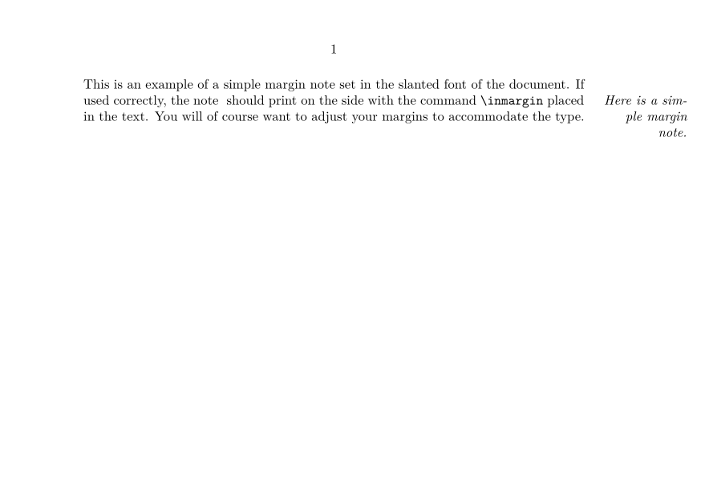

Syntax (autogenerated)
| \setupmargindata[...,...][...=...,...] | |
| [...,...] | name |
| strut | yes no auto cap fit line default character |
| command | oneargument |
| width | dimension |
| align | see \setupalign |
| anchor | region text |
| location | left right inner outer |
| method | top line first depth height |
| category | default edge |
| scope | local global |
| option | text paragraph |
| margin | local normal margin edge |
| distance | dimension |
| hoffset | dimension |
| voffset | dimension |
| dy | dimension |
| bottomspace | dimension |
| threshold | dimension |
| line | number |
| stack | yes continue |
| style | style command |
| color | color |
Description
Stack option is used to emulate LaTeX’s marginpars (they’re considered floats, hence the resulting margin notes do not overlap).
The first bracket can be used to provide different setups for different margin text types. It defines which type of text the following parameters apply to. So the following code defines that any text placed in the margin using \inright{...} will be slanted:
\setupmargindata[right][style=slanted]
The previous code does not alter the location of the \inmargin command. To do that you would use:
\setupmargindata[location=right,style=slanted]
Example
The following code inserts text in the right-hand page margin:
-
\setuppapersize[A6,landscape] \setupmargindata[inmargin][location=right,style=italic] \starttext This is an example of a simple margin note set in the slanted font of the document. If used correctly, the note \inmargin{Here is a simple margin note.} should print on the side with the command \type {\inmargin} placed in the text. You will of course want to adjust your margins to accommodate the type. \stoptext
- 
See also
Help from ConTeXt-Mailinglist/Forum
All issues with: